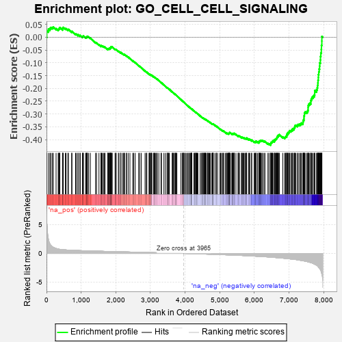
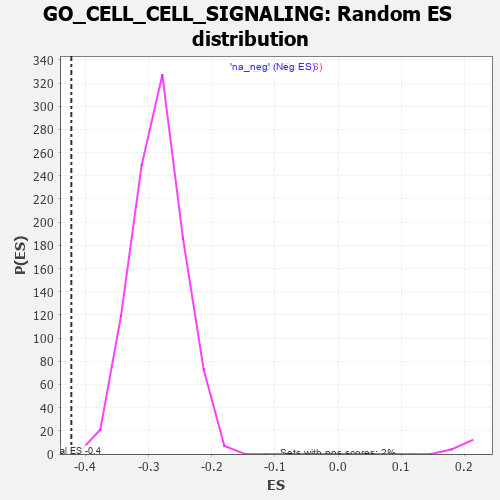

| | | Dataset | 7d |
| Phenotype | NoPhenotypeAvailable |
| Upregulated in class | na_neg |
| GeneSet | GO_CELL_CELL_SIGNALING |
| Enrichment Score (ES) | -0.42215356 |
| Normalized Enrichment Score (NES) | -1.4817044 |
| Nominal p-value | 0.0010162601 |
| FDR q-value | 0.20883845 |
| FWER p-Value | 1.0 |
Table: GSEA Results Summary

Fig 1: Enrichment plot: GO_CELL_CELL_SIGNALING
Profile of the Running ES Score & Positions of GeneSet Members on the Rank Ordered List
| PROBE | GENE SYMBOL | GENE_TITLE | RANK IN GENE LIST | RANK METRIC SCORE | RUNNING ES | CORE ENRICHMENT | | 1 | SYT2 | | | 8 | 5.577 | 0.0260 | No |
| 2 | MC4R | | | 57 | 2.491 | 0.0318 | No |
| 3 | IRS1 | | | 98 | 1.659 | 0.0346 | No |
| 4 | ADCY8 | | | 124 | 1.418 | 0.0383 | No |
| 5 | AXIN1 | | | 166 | 1.159 | 0.0385 | No |
| 6 | WNT16 | | | 198 | 1.072 | 0.0397 | No |
| 7 | HGF | | | 276 | 0.870 | 0.0338 | No |
| 8 | DLL1 | | | 337 | 0.760 | 0.0296 | No |
| 9 | GSK3A | | | 351 | 0.745 | 0.0315 | No |
| 10 | LGR6 | | | 360 | 0.738 | 0.0341 | No |
| 11 | AXIN2 | | | 383 | 0.713 | 0.0346 | No |
| 12 | MESD | | | 384 | 0.713 | 0.0381 | No |
| 13 | LEO1 | | | 463 | 0.655 | 0.0311 | No |
| 14 | LRP1 | | | 470 | 0.648 | 0.0334 | No |
| 15 | DYTN | | | 471 | 0.648 | 0.0366 | No |
| 16 | CDC20 | | | 480 | 0.644 | 0.0386 | No |
| 17 | SRF | | | 542 | 0.615 | 0.0336 | No |
| 18 | NLE1 | | | 565 | 0.609 | 0.0337 | No |
| 19 | KCND2 | | | 617 | 0.590 | 0.0299 | No |
| 20 | GLMN | | | 632 | 0.583 | 0.0309 | No |
| 21 | NOTUM | | | 726 | 0.553 | 0.0214 | No |
| 22 | WDR61 | | | 734 | 0.549 | 0.0231 | No |
| 23 | PORCN | | | 838 | 0.522 | 0.0122 | No |
| 24 | AMFR | | | 856 | 0.518 | 0.0125 | No |
| 25 | WLS | | | 907 | 0.505 | 0.0084 | No |
| 26 | NLK | | | 911 | 0.504 | 0.0104 | No |
| 27 | CTR9 | | | 964 | 0.492 | 0.0060 | No |
| 28 | DVL3 | | | 971 | 0.490 | 0.0076 | No |
| 29 | AKT1 | | | 1040 | 0.476 | 0.0010 | No |
| 30 | YAP1 | | | 1041 | 0.475 | 0.0033 | No |
| 31 | MEF2C | | | 1054 | 0.473 | 0.0040 | No |
| 32 | FZD10 | | | 1065 | 0.470 | 0.0050 | No |
| 33 | SRC | | | 1128 | 0.459 | -0.0009 | No |
| 34 | SNX19 | | | 1146 | 0.454 | -0.0009 | No |
| 35 | PSMD7 | | | 1152 | 0.454 | 0.0006 | No |
| 36 | CCNY | | | 1168 | 0.451 | 0.0008 | No |
| 37 | RFX3 | | | 1171 | 0.451 | 0.0028 | No |
| 38 | PSMD2 | | | 1181 | 0.450 | 0.0038 | No |
| 39 | CDK14 | | | 1217 | 0.444 | 0.0013 | No |
| 40 | CDC73 | | | 1265 | 0.436 | -0.0027 | No |
| 41 | P2RY1 | | | 1416 | 0.407 | -0.0204 | No |
| 42 | RBX1 | | | 1445 | 0.401 | -0.0221 | No |
| 43 | INHBB | | | 1514 | 0.388 | -0.0291 | No |
| 44 | CNTN4 | | | 1571 | 0.379 | -0.0346 | No |
| 45 | FZD1 | | | 1574 | 0.379 | -0.0330 | No |
| 46 | PAF1 | | | 1588 | 0.376 | -0.0329 | No |
| 47 | BIRC8 | | | 1615 | 0.372 | -0.0345 | No |
| 48 | DDB1 | | | 1642 | 0.366 | -0.0362 | No |
| 49 | BACE1 | | | 1673 | 0.360 | -0.0383 | No |
| 50 | WWOX | | | 1688 | 0.359 | -0.0384 | No |
| 51 | AGO2 | | | 1767 | 0.343 | -0.0470 | No |
| 52 | LRP5 | | | 1769 | 0.342 | -0.0455 | No |
| 53 | TLE4 | | | 1775 | 0.341 | -0.0445 | No |
| 54 | GRM8 | | | 1791 | 0.339 | -0.0448 | No |
| 55 | PSMD4 | | | 1811 | 0.335 | -0.0456 | No |
| 56 | ABR | | | 1812 | 0.335 | -0.0440 | No |
| 57 | FMR1 | | | 1816 | 0.334 | -0.0428 | No |
| 58 | GATA4 | | | 1837 | 0.330 | -0.0438 | No |
| 59 | RTF1 | | | 1844 | 0.329 | -0.0430 | No |
| 60 | AP2S1 | | | 1846 | 0.329 | -0.0415 | No |
| 61 | TCF7 | | | 1848 | 0.328 | -0.0401 | No |
| 62 | PSMD6 | | | 1858 | 0.326 | -0.0397 | No |
| 63 | SMAD4 | | | 1860 | 0.326 | -0.0382 | No |
| 64 | TLE3 | | | 1863 | 0.325 | -0.0369 | No |
| 65 | GLRA2 | | | 1892 | 0.321 | -0.0390 | No |
| 66 | CUL3 | | | 1893 | 0.321 | -0.0374 | No |
| 67 | BRSK2 | | | 1979 | 0.308 | -0.0471 | No |
| 68 | ROR1 | | | 1993 | 0.306 | -0.0473 | No |
| 69 | RAF1 | | | 2011 | 0.303 | -0.0481 | No |
| 70 | KCNC2 | | | 2075 | 0.295 | -0.0549 | No |
| 71 | FOXD1 | | | 2093 | 0.292 | -0.0557 | No |
| 72 | JADE1 | | | 2141 | 0.286 | -0.0605 | No |
| 73 | PSME4 | | | 2143 | 0.285 | -0.0592 | No |
| 74 | SYK | | | 2186 | 0.278 | -0.0634 | No |
| 75 | GRIK3 | | | 2224 | 0.272 | -0.0669 | No |
| 76 | CREB1 | | | 2243 | 0.269 | -0.0680 | No |
| 77 | PSMF1 | | | 2251 | 0.268 | -0.0676 | No |
| 78 | GSKIP | | | 2304 | 0.259 | -0.0731 | No |
| 79 | REST | | | 2308 | 0.259 | -0.0723 | No |
| 80 | MIF | | | 2357 | 0.252 | -0.0773 | No |
| 81 | BTBD9 | | | 2407 | 0.245 | -0.0826 | No |
| 82 | UBAC2 | | | 2488 | 0.229 | -0.0919 | No |
| 83 | TLR1 | | | 2517 | 0.224 | -0.0945 | No |
| 84 | PSMD5 | | | 2560 | 0.218 | -0.0990 | No |
| 85 | MITF | | | 2659 | 0.205 | -0.1108 | No |
| 86 | KDM6A | | | 2690 | 0.200 | -0.1138 | No |
| 87 | CUL1 | | | 2735 | 0.193 | -0.1186 | No |
| 88 | NR2E1 | | | 2844 | 0.177 | -0.1319 | No |
| 89 | DAPK3 | | | 2880 | 0.169 | -0.1357 | No |
| 90 | FGFR2 | | | 2895 | 0.167 | -0.1367 | No |
| 91 | BTK | | | 2958 | 0.156 | -0.1440 | No |
| 92 | GID8 | | | 2978 | 0.153 | -0.1458 | No |
| 93 | ANO1 | | | 2982 | 0.152 | -0.1454 | No |
| 94 | PCSK5 | | | 2983 | 0.152 | -0.1447 | No |
| 95 | BRD7 | | | 3018 | 0.147 | -0.1484 | No |
| 96 | WNT4 | | | 3023 | 0.146 | -0.1483 | No |
| 97 | PIAS4 | | | 3034 | 0.145 | -0.1489 | No |
| 98 | LEF1 | | | 3037 | 0.144 | -0.1484 | No |
| 99 | HDAC1 | | | 3086 | 0.138 | -0.1541 | No |
| 100 | AIMP1 | | | 3105 | 0.136 | -0.1557 | No |
| 101 | SYT8 | | | 3115 | 0.135 | -0.1563 | No |
| 102 | MTMR2 | | | 3126 | 0.133 | -0.1569 | No |
| 103 | SFRP5 | | | 3154 | 0.129 | -0.1598 | No |
| 104 | PSMD9 | | | 3179 | 0.125 | -0.1624 | No |
| 105 | KCNN1 | | | 3196 | 0.123 | -0.1639 | No |
| 106 | FADS1 | | | 3242 | 0.114 | -0.1692 | No |
| 107 | SMAD3 | | | 3303 | 0.105 | -0.1766 | No |
| 108 | RAB8A | | | 3319 | 0.102 | -0.1781 | No |
| 109 | DDX3X | | | 3388 | 0.091 | -0.1865 | No |
| 110 | AP2A2 | | | 3433 | 0.085 | -0.1919 | No |
| 111 | CDK5 | | | 3480 | 0.080 | -0.1975 | No |
| 112 | GLI1 | | | 3489 | 0.079 | -0.1982 | No |
| 113 | RGS8 | | | 3490 | 0.079 | -0.1978 | No |
| 114 | UBR5 | | | 3518 | 0.074 | -0.2010 | No |
| 115 | GRK6 | | | 3525 | 0.072 | -0.2014 | No |
| 116 | PIN1 | | | 3543 | 0.069 | -0.2033 | No |
| 117 | RIC3 | | | 3629 | 0.055 | -0.2142 | No |
| 118 | ACSL4 | | | 3632 | 0.055 | -0.2142 | No |
| 119 | CCKAR | | | 3648 | 0.051 | -0.2159 | No |
| 120 | SKP1 | | | 3663 | 0.049 | -0.2175 | No |
| 121 | DHX9 | | | 3693 | 0.044 | -0.2211 | No |
| 122 | NF1 | | | 3713 | 0.040 | -0.2234 | No |
| 123 | AMPH | | | 3715 | 0.040 | -0.2233 | No |
| 124 | SYT11 | | | 3732 | 0.036 | -0.2252 | No |
| 125 | HTR1B | | | 3745 | 0.035 | -0.2266 | No |
| 126 | SKI | | | 3762 | 0.032 | -0.2286 | No |
| 127 | DGKZ | | | 3879 | 0.015 | -0.2437 | No |
| 128 | IFIH1 | | | 3919 | 0.006 | -0.2488 | No |
| 129 | NRG3 | | | 3925 | 0.005 | -0.2494 | No |
| 130 | GPC6 | | | 3950 | 0.002 | -0.2525 | No |
| 131 | PPM1A | | | 3953 | 0.002 | -0.2528 | No |
| 132 | GLRA1 | | | 3957 | 0.001 | -0.2532 | No |
| 133 | VPS35 | | | 3989 | -0.006 | -0.2572 | No |
| 134 | DDX58 | | | 3998 | -0.007 | -0.2582 | No |
| 135 | TOR1A | | | 4030 | -0.013 | -0.2622 | No |
| 136 | SFRP2 | | | 4065 | -0.018 | -0.2666 | No |
| 137 | WNT2 | | | 4084 | -0.021 | -0.2688 | No |
| 138 | MTOR | | | 4114 | -0.025 | -0.2725 | No |
| 139 | ABL1 | | | 4125 | -0.027 | -0.2737 | No |
| 140 | HNF4A | | | 4157 | -0.034 | -0.2776 | No |
| 141 | SYT12 | | | 4172 | -0.037 | -0.2793 | No |
| 142 | SYNJ1 | | | 4173 | -0.038 | -0.2791 | No |
| 143 | PDX1 | | | 4179 | -0.038 | -0.2795 | No |
| 144 | EXOC4 | | | 4182 | -0.039 | -0.2796 | No |
| 145 | AP2B1 | | | 4185 | -0.039 | -0.2797 | No |
| 146 | ENY2 | | | 4195 | -0.041 | -0.2807 | No |
| 147 | ARL2 | | | 4254 | -0.050 | -0.2880 | No |
| 148 | PSME3 | | | 4280 | -0.056 | -0.2910 | No |
| 149 | WNT11 | | | 4282 | -0.056 | -0.2909 | No |
| 150 | STRN | | | 4307 | -0.060 | -0.2937 | No |
| 151 | SYT17 | | | 4310 | -0.061 | -0.2937 | No |
| 152 | TSHR | | | 4322 | -0.063 | -0.2948 | No |
| 153 | LHX5 | | | 4332 | -0.066 | -0.2957 | No |
| 154 | ADRB2 | | | 4352 | -0.068 | -0.2979 | No |
| 155 | LIN7B | | | 4370 | -0.071 | -0.2997 | No |
| 156 | VPS29 | | | 4433 | -0.082 | -0.3075 | No |
| 157 | LRRK2 | | | 4467 | -0.087 | -0.3114 | No |
| 158 | JPH3 | | | 4481 | -0.091 | -0.3126 | No |
| 159 | ILK | | | 4510 | -0.096 | -0.3158 | No |
| 160 | WNT5B | | | 4517 | -0.098 | -0.3161 | No |
| 161 | NPTN | | | 4519 | -0.098 | -0.3158 | No |
| 162 | NTRK2 | | | 4543 | -0.104 | -0.3183 | No |
| 163 | APC | | | 4558 | -0.107 | -0.3196 | No |
| 164 | STX2 | | | 4562 | -0.108 | -0.3195 | No |
| 165 | NISCH | | | 4568 | -0.109 | -0.3196 | No |
| 166 | SYT4 | | | 4590 | -0.116 | -0.3218 | No |
| 167 | PNKD | | | 4591 | -0.116 | -0.3212 | No |
| 168 | GATA3 | | | 4614 | -0.120 | -0.3235 | No |
| 169 | NMUR2 | | | 4646 | -0.127 | -0.3270 | No |
| 170 | FGFR3 | | | 4656 | -0.129 | -0.3275 | No |
| 171 | ITPR1 | | | 4661 | -0.130 | -0.3274 | No |
| 172 | PTK7 | | | 4687 | -0.136 | -0.3300 | No |
| 173 | RAP1B | | | 4706 | -0.140 | -0.3317 | No |
| 174 | PXK | | | 4726 | -0.144 | -0.3335 | No |
| 175 | PLCG1 | | | 4770 | -0.151 | -0.3384 | No |
| 176 | MYO5A | | | 4787 | -0.155 | -0.3398 | No |
| 177 | PCLO | | | 4793 | -0.156 | -0.3397 | No |
| 178 | TERT | | | 4801 | -0.157 | -0.3398 | No |
| 179 | TNIK | | | 4804 | -0.158 | -0.3393 | No |
| 180 | PLCL2 | | | 4807 | -0.159 | -0.3388 | No |
| 181 | P2RX4 | | | 4813 | -0.161 | -0.3387 | No |
| 182 | DLG1 | | | 4860 | -0.169 | -0.3439 | No |
| 183 | MARK2 | | | 4899 | -0.177 | -0.3480 | No |
| 184 | VAMP8 | | | 4905 | -0.179 | -0.3478 | No |
| 185 | FZD4 | | | 4940 | -0.186 | -0.3513 | No |
| 186 | KLF4 | | | 5005 | -0.198 | -0.3588 | No |
| 187 | GRAP | | | 5028 | -0.204 | -0.3607 | No |
| 188 | NUDT3 | | | 5050 | -0.209 | -0.3624 | No |
| 189 | DRD2 | | | 5088 | -0.221 | -0.3662 | No |
| 190 | ITSN1 | | | 5094 | -0.222 | -0.3657 | No |
| 191 | DOC2B | | | 5113 | -0.229 | -0.3670 | No |
| 192 | KCMF1 | | | 5160 | -0.239 | -0.3718 | No |
| 193 | SMO | | | 5195 | -0.247 | -0.3751 | No |
| 194 | NOVA1 | | | 5197 | -0.247 | -0.3740 | No |
| 195 | TMF1 | | | 5225 | -0.251 | -0.3764 | No |
| 196 | TNKS2 | | | 5239 | -0.254 | -0.3768 | No |
| 197 | SSH1 | | | 5254 | -0.258 | -0.3774 | No |
| 198 | PTEN | | | 5262 | -0.261 | -0.3771 | No |
| 199 | PICK1 | | | 5265 | -0.263 | -0.3760 | No |
| 200 | RIMS2 | | | 5272 | -0.265 | -0.3755 | No |
| 201 | EPHA4 | | | 5273 | -0.265 | -0.3743 | No |
| 202 | CELF4 | | | 5275 | -0.266 | -0.3731 | No |
| 203 | FAT1 | | | 5281 | -0.267 | -0.3725 | No |
| 204 | MAGI2 | | | 5295 | -0.269 | -0.3729 | No |
| 205 | NPY2R | | | 5331 | -0.281 | -0.3761 | No |
| 206 | ITPR3 | | | 5361 | -0.288 | -0.3785 | No |
| 207 | MPP2 | | | 5367 | -0.288 | -0.3777 | No |
| 208 | GRIN1 | | | 5381 | -0.291 | -0.3780 | No |
| 209 | FZD5 | | | 5386 | -0.292 | -0.3771 | No |
| 210 | DLG4 | | | 5388 | -0.293 | -0.3758 | No |
| 211 | LATS1 | | | 5412 | -0.298 | -0.3774 | No |
| 212 | KCNC4 | | | 5414 | -0.298 | -0.3761 | No |
| 213 | PPM1B | | | 5422 | -0.300 | -0.3756 | No |
| 214 | CPT1A | | | 5467 | -0.311 | -0.3798 | No |
| 215 | TRIM9 | | | 5526 | -0.327 | -0.3858 | No |
| 216 | SIDT2 | | | 5542 | -0.331 | -0.3862 | No |
| 217 | FGFR1 | | | 5543 | -0.332 | -0.3846 | No |
| 218 | DTNB | | | 5571 | -0.338 | -0.3865 | No |
| 219 | ROR2 | | | 5626 | -0.353 | -0.3918 | No |
| 220 | ASPM | | | 5637 | -0.358 | -0.3914 | No |
| 221 | WNK1 | | | 5650 | -0.362 | -0.3912 | No |
| 222 | PSMD1 | | | 5674 | -0.367 | -0.3924 | No |
| 223 | LRRC4 | | | 5692 | -0.371 | -0.3929 | No |
| 224 | DGKI | | | 5725 | -0.384 | -0.3952 | No |
| 225 | ENSA | | | 5739 | -0.388 | -0.3950 | No |
| 226 | TLR2 | | | 5761 | -0.395 | -0.3959 | No |
| 227 | GLRB | | | 5776 | -0.398 | -0.3958 | No |
| 228 | VAMP7 | | | 5777 | -0.399 | -0.3938 | No |
| 229 | SNX4 | | | 5834 | -0.415 | -0.3991 | No |
| 230 | ARL6 | | | 5847 | -0.417 | -0.3987 | No |
| 231 | CDK16 | | | 5869 | -0.425 | -0.3994 | No |
| 232 | KCNQ1 | | | 5918 | -0.441 | -0.4035 | No |
| 233 | STK11 | | | 5922 | -0.443 | -0.4018 | No |
| 234 | SYT9 | | | 5992 | -0.469 | -0.4085 | No |
| 235 | PTPRN | | | 6007 | -0.474 | -0.4081 | No |
| 236 | RAC1 | | | 6036 | -0.484 | -0.4094 | No |
| 237 | PPT1 | | | 6038 | -0.485 | -0.4072 | No |
| 238 | FZD8 | | | 6051 | -0.490 | -0.4064 | No |
| 239 | UBB | | | 6090 | -0.503 | -0.4089 | No |
| 240 | DLG2 | | | 6126 | -0.513 | -0.4110 | No |
| 241 | IFT80 | | | 6135 | -0.515 | -0.4095 | No |
| 242 | TNKS | | | 6138 | -0.516 | -0.4073 | No |
| 243 | STK4 | | | 6145 | -0.518 | -0.4056 | No |
| 244 | EGR1 | | | 6165 | -0.527 | -0.4055 | No |
| 245 | GRID2 | | | 6170 | -0.528 | -0.4035 | No |
| 246 | FJX1 | | | 6186 | -0.533 | -0.4028 | No |
| 247 | SMAD2 | | | 6216 | -0.541 | -0.4040 | No |
| 248 | CDC42 | | | 6236 | -0.548 | -0.4038 | No |
| 249 | FLOT1 | | | 6276 | -0.564 | -0.4062 | No |
| 250 | SYTL4 | | | 6304 | -0.578 | -0.4070 | No |
| 251 | TRPM4 | | | 6390 | -0.612 | -0.4151 | No |
| 252 | PTPRD | | | 6423 | -0.629 | -0.4163 | No |
| 253 | GLRA3 | | | 6469 | -0.648 | -0.4190 | Yes |
| 254 | SYT15 | | | 6472 | -0.650 | -0.4161 | Yes |
| 255 | SOX2 | | | 6477 | -0.652 | -0.4135 | Yes |
| 256 | DYSF | | | 6481 | -0.654 | -0.4107 | Yes |
| 257 | DPP4 | | | 6501 | -0.663 | -0.4100 | Yes |
| 258 | TRPV4 | | | 6515 | -0.668 | -0.4084 | Yes |
| 259 | VAMP2 | | | 6525 | -0.672 | -0.4063 | Yes |
| 260 | KANK1 | | | 6536 | -0.678 | -0.4043 | Yes |
| 261 | P2RX5 | | | 6576 | -0.699 | -0.4061 | Yes |
| 262 | CLN3 | | | 6580 | -0.699 | -0.4031 | Yes |
| 263 | ARF1 | | | 6583 | -0.701 | -0.3999 | Yes |
| 264 | MKS1 | | | 6607 | -0.715 | -0.3995 | Yes |
| 265 | SCYL2 | | | 6621 | -0.724 | -0.3977 | Yes |
| 266 | WWTR1 | | | 6631 | -0.729 | -0.3953 | Yes |
| 267 | PTPRS | | | 6646 | -0.738 | -0.3935 | Yes |
| 268 | RAB5A | | | 6655 | -0.741 | -0.3910 | Yes |
| 269 | VPS18 | | | 6659 | -0.743 | -0.3878 | Yes |
| 270 | MPC2 | | | 6683 | -0.753 | -0.3871 | Yes |
| 271 | CPLX1 | | | 6684 | -0.753 | -0.3835 | Yes |
| 272 | EGFR | | | 6708 | -0.765 | -0.3828 | Yes |
| 273 | GSK3B | | | 6719 | -0.768 | -0.3804 | Yes |
| 274 | GIPC1 | | | 6819 | -0.826 | -0.3893 | Yes |
| 275 | CBY1 | | | 6874 | -0.851 | -0.3923 | Yes |
| 276 | TRHDE | | | 6890 | -0.861 | -0.3900 | Yes |
| 277 | WIF1 | | | 6904 | -0.870 | -0.3875 | Yes |
| 278 | LRP8 | | | 6931 | -0.889 | -0.3866 | Yes |
| 279 | SNX3 | | | 6934 | -0.893 | -0.3825 | Yes |
| 280 | GHSR | | | 6937 | -0.894 | -0.3785 | Yes |
| 281 | DNM1L | | | 6963 | -0.913 | -0.3773 | Yes |
| 282 | PIM3 | | | 6964 | -0.914 | -0.3729 | Yes |
| 283 | NPHP4 | | | 6991 | -0.931 | -0.3717 | Yes |
| 284 | CCR2 | | | 7003 | -0.939 | -0.3686 | Yes |
| 285 | ECE2 | | | 7012 | -0.945 | -0.3651 | Yes |
| 286 | GRM5 | | | 7053 | -0.969 | -0.3656 | Yes |
| 287 | PLCB4 | | | 7069 | -0.977 | -0.3628 | Yes |
| 288 | RAB1A | | | 7096 | -0.993 | -0.3614 | Yes |
| 289 | RYK | | | 7102 | -1.000 | -0.3572 | Yes |
| 290 | CFTR | | | 7143 | -1.030 | -0.3575 | Yes |
| 291 | SYT1 | | | 7148 | -1.033 | -0.3530 | Yes |
| 292 | PCDH1 | | | 7165 | -1.046 | -0.3500 | Yes |
| 293 | AR | | | 7169 | -1.046 | -0.3453 | Yes |
| 294 | OTOF | | | 7198 | -1.069 | -0.3438 | Yes |
| 295 | ABCA1 | | | 7243 | -1.113 | -0.3442 | Yes |
| 296 | HCN4 | | | 7260 | -1.134 | -0.3407 | Yes |
| 297 | ANK2 | | | 7298 | -1.170 | -0.3399 | Yes |
| 298 | CYLD | | | 7333 | -1.206 | -0.3385 | Yes |
| 299 | CEP89 | | | 7354 | -1.223 | -0.3352 | Yes |
| 300 | CELA1 | | | 7399 | -1.265 | -0.3348 | Yes |
| 301 | GRM1 | | | 7404 | -1.272 | -0.3292 | Yes |
| 302 | UBC | | | 7410 | -1.274 | -0.3236 | Yes |
| 303 | KLF5 | | | 7429 | -1.304 | -0.3197 | Yes |
| 304 | LHX1 | | | 7431 | -1.305 | -0.3135 | Yes |
| 305 | KMO | | | 7432 | -1.308 | -0.3071 | Yes |
| 306 | MYRIP | | | 7443 | -1.323 | -0.3020 | Yes |
| 307 | KCNB1 | | | 7444 | -1.327 | -0.2956 | Yes |
| 308 | NPY | | | 7465 | -1.356 | -0.2916 | Yes |
| 309 | VDAC1 | | | 7512 | -1.409 | -0.2908 | Yes |
| 310 | GRIK1 | | | 7538 | -1.454 | -0.2870 | Yes |
| 311 | LAMA2 | | | 7549 | -1.468 | -0.2812 | Yes |
| 312 | DCC | | | 7550 | -1.470 | -0.2740 | Yes |
| 313 | GRIK2 | | | 7552 | -1.471 | -0.2670 | Yes |
| 314 | CALM1 | | | 7567 | -1.499 | -0.2616 | Yes |
| 315 | GRM2 | | | 7596 | -1.547 | -0.2577 | Yes |
| 316 | PKD1 | | | 7628 | -1.611 | -0.2540 | Yes |
| 317 | KCNN2 | | | 7629 | -1.611 | -0.2462 | Yes |
| 318 | MCU | | | 7644 | -1.637 | -0.2401 | Yes |
| 319 | HCN2 | | | 7662 | -1.668 | -0.2342 | Yes |
| 320 | ADCY1 | | | 7695 | -1.752 | -0.2299 | Yes |
| 321 | ASIC1 | | | 7726 | -1.838 | -0.2249 | Yes |
| 322 | PLPP3 | | | 7740 | -1.876 | -0.2175 | Yes |
| 323 | GRM3 | | | 7741 | -1.880 | -0.2083 | Yes |
| 324 | GRIK5 | | | 7792 | -2.044 | -0.2050 | Yes |
| 325 | DCDC2 | | | 7813 | -2.099 | -0.1974 | Yes |
| 326 | PKD2 | | | 7822 | -2.167 | -0.1879 | Yes |
| 327 | GRIK4 | | | 7832 | -2.234 | -0.1783 | Yes |
| 328 | GRIA1 | | | 7836 | -2.260 | -0.1677 | Yes |
| 329 | DLX5 | | | 7845 | -2.378 | -0.1572 | Yes |
| 330 | GRM4 | | | 7847 | -2.393 | -0.1457 | Yes |
| 331 | GRID1 | | | 7858 | -2.465 | -0.1350 | Yes |
| 332 | CALM3 | | | 7869 | -2.525 | -0.1241 | Yes |
| 333 | FYN | | | 7881 | -2.622 | -0.1128 | Yes |
| 334 | GRIA2 | | | 7885 | -2.684 | -0.1001 | Yes |
| 335 | PLCB1 | | | 7904 | -2.841 | -0.0887 | Yes |
| 336 | PSMD3 | | | 7907 | -2.887 | -0.0750 | Yes |
| 337 | ASIC2 | | | 7917 | -2.995 | -0.0616 | Yes |
| 338 | PSMD8 | | | 7931 | -3.286 | -0.0473 | Yes |
| 339 | ARRB1 | | | 7935 | -3.377 | -0.0313 | Yes |
| 340 | PASK | | | 7946 | -3.674 | -0.0148 | Yes |
| 341 | XIAP | | | 7947 | -3.696 | 0.0031 | Yes |
Table: GSEA details [plain text format]

Fig 2: GO_CELL_CELL_SIGNALING: Random ES distribution
Gene set null distribution of ES for GO_CELL_CELL_SIGNALING